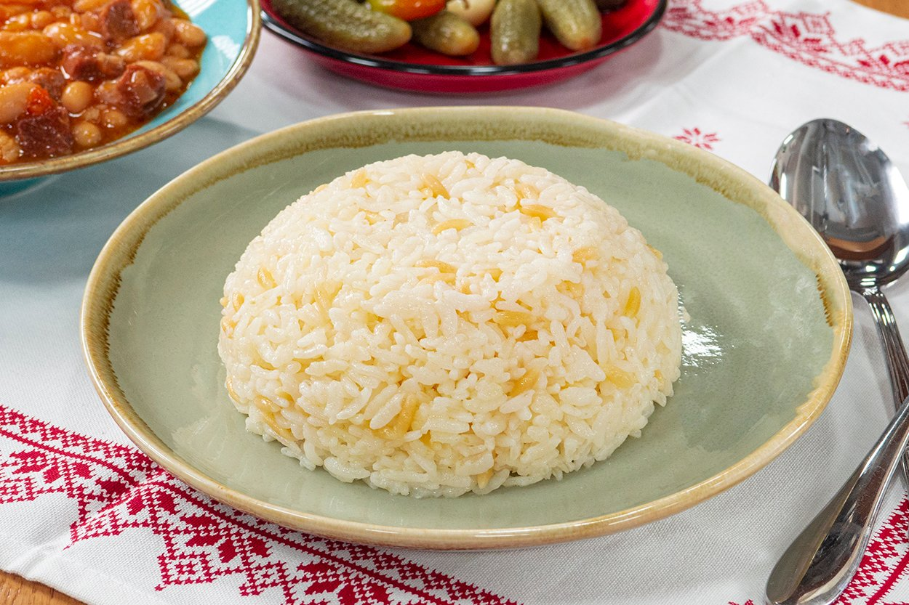

İçindekiler
- Malzemeler
- 2 su bardağı pirinç
- 2,5 su bardağı sıcak su
- 3 yemek kaşığı tereyağı
- 1 yemek kaşığı sıvı yağ
- Tuz
Hazırlanışı
- Pirinci bol su ile yıkayın. Uygun bir kaba alarak üzerini geçecek kadar ılık su ekleyin.
- Birazda tuz ilave edip karıştırın ve 15-20 dakika bekletin.
- Tencerede tereyağını eritip suyu süzülmüş pirinci ekleyin ve 4-5 dakika kadar kavurun.
- Pirinçlerin yeteri kadar kavrulduğunu pirinler tane tane dökülmeye başladığında anlayabilirsiniz.
- Pirinçler kavrulduktan sonra sıcak su veya sıcak et suyunu ekleyelim.İsterseniz yarım tavuk suyu yarım sıcak su kullanabilirsiniz.
- Tavuk suyunuz yağlı ise bu şekilde su ile karıştırmanızı tavsiye ederim ancak yağlı değilse tamamı tavuk suyu ile çok daha lezzetli olacaktır.
- Son olarak tuzu ekleyin.
- Pilavımızı kapağı kapalı bir şekilde önce yüksek ateşte pişmeye bırakalım.
- Üzeri göz göz olduğunda yani üzerindeki suyu çekip pilavın üzerinde nokta nokta delikler oluştuğunda kısık ateşe alalım.
- Pirinçler yumuşayıp suyu tamamen çekene kadar pişirelim.
- Pişen pilavımızı ocaktan aldıktan sonra üzerine havlu peçete sererek kapağını tekrar kapatalım.
- Pilavı 10-15 dk. dinlendirelim. Daha sonra tahta kaşık ile karıştırarak servis yapabilirsiniz.
Besin Değerleri
1 porsiyon pilav (100g) 130 kaloridir.
- Toplam yağ 0,3 g
- Kolesterol 0 mg
- Sodyum 1 mg
- Potasyum 35 mg
- Karbonhidrat 28 g
- Diyet Lifi 0,4 g
- Şeker 0,1 g
- Protein 2,7 g